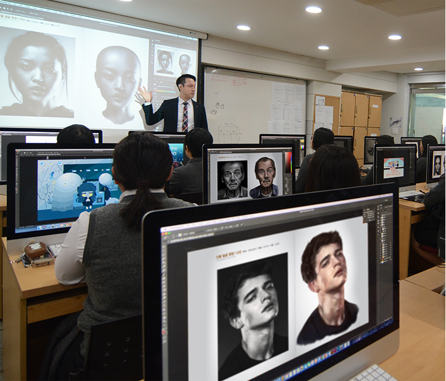
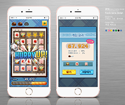
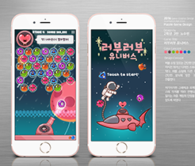

GAME DEVELOPMENT COURSE
CORE OF GLOBAL CULTURE CONTENTS
GAME CONTENTS
- INTRODUCTION
- Game contents department is a driving force for culture and IT industry.
- FOCUS
- Nurture the world's best game developers through project-oriented practical training and intensive major courses of 2D & 3D Graphic Design, Game Programming, Computer Music.


-
GAME
GRAPHIC - GOAL : Acquire job skills required for practical work using 2D & 3D game graphics creation tools
- SUBJECT : Computer Graphics, Game Production Foundation, 2D Computer Game Graphics, 3D Computer Game Graphics, Game Design, On-site Comprehensive Project.
- 2D GAME GRAPHIC - [Photoshop, Illustrator, InDesign, Spine2D]
- 3D GAME GRAPHIC - [3DS Max, Z brush, After Effect, Unity 3D, Unreal]
-
GAME
PROGRAMMING - GOAL : Develop games using C, C++, Windows API programming and DirectX
- SUBJECT : Programming, Game Production Foundation, Game Design, On-site Comprehensive Project
- [Visual Studio, Eclips, Java, C, C++, C#, HTML5, DirectX SDK, Unity 3D]
-
GAME
SCORING - GOAL : Create background music for games and animations
- SUBJECT : Music basic theory, Harmonics, Cubase, Sound editing, Audio effects & mixing
- CLUBS
- Game Illustrater, Broadcasting(DBS), Gamedevelopment Talents, Animation Talents, Gamedevelopment(ON), Gamedrawing, Gamegraphics(LUGH), KOI
- QUALIFICATION
- Craftsman Computer Graphics Operation, Certificate of Game Planner, Certificate of Game Programmer, Certificate of Game Graphics Designer, Craftsman Information Processing, Craftsman Information Equipment Operation, 1 degree GTQ(Graphic Technology Qualification), ITQ, Craftsman Web Design, Specialist-Multimedia Contents Producing
GAME DEVELOPMENT COURSE
DRIVING FORCE OF CULTURE & THE 4TH REVOLUTIONARY INDUSTRY
VR CONTENTS

- INTRODUCTION
- Virtual Reality contents department is the driving force of culture & the 4th revolutionary industry.
- FOCUS
- Nurture the world's best stereoscopic image experts through project-oriented practical training and intensive major courses of 2D & 3D Graphic Design, Game Programming, Computer Music.


-
VR
GRAPHIC - GOAL : Train stereoscopic image experts using 2D & 3D game graphics creation tools
- SUBJECT : Computer Graphics, Game Production Foundation, 2D Computer Game Graphics, 3D Computer Game Graphics, Game Design, Game Contents Production
- 2D Game graphics Design - [Photoshop, Illustrator, Flash, Painter, InDesign]
- 3D Game Graphics Design - [3DS MAX, Z brush, After Effect, Unity 3D, Unreal, Substance]
-
VR
PROGRAMMING - GOAL : Develop games using C, C++, Windows API programming and DirectX
- SUBJECT : Programming, Game Production Foundation, Game Design, On-site Comprehensive Project
- [Visual studio, Eclipse, Java, C, C++, C#, HTML5, DirectX SDK, Unity 3D, Unreal Blueprint]
-
GAME
SCORING - GOAL : Create background music for games and animations
- SUBJECT : Music basic theory, Harmonics, Cubase, Sound editing, Audio effects & mixing
- CLUBS
- Game Illustrater, Broadcasting(DBS), Game development Talents, Animation Talents, Game development(ON), Game drawing, Game graphics(LUGH), KOI
- QUALIFICATION
- Craftsman Computer Graphics Operation, Certificate of Game Planner, Certificate of Game Programmer, Certificate of Game Graphics Designer, Craftsman Information Processing, Craftsman Information Equipment Operation, 1 degree GTQ(Graphic Technology Qualification), ITQ, Craftsman Web Design, Specialist-Multimedia Contents Producing
SOFTWARE DEVELOPMENT COURSE
The age of location-based SERVICES
SPATIAL INFORMATION SOFTWARE

- INTRODUCTION
- The Spatial Information Software department aims to nurture specialists who provide spatial information convergence services, the core technology of the 4th industrial revolution.
- FOCUS
- Nurture professional manpower through training courses focused on functional education curriculum of DB and SW required in industrial field
- ※ What is spatial information convergence service? Various information generated in space is digitized, constructed as a database, and provided as a customized service for users through application software


-
Spatial
information
Web & App
Developmen - GOAL : Develop spatial information web & application using Open API
- SUBJECT : Application Programming, Smart App Contents Creation, Spatial Information Convergence Service, UI / UX Engineering, Computer Graphics
- [HTML5, CSS3, Javascript, PHP, JSP, Tomcat, AndroidStudio, Java, Eclipse, Photoshop, Illustrator, InDesign]
-
Spatial
information
data
processin - GOAL : Learn various types of spatial information data and methods to produce them, and construct & utilize spatial information database by collecting big data (unstructured data) or public data
- SUBJECT : Database Programming, Database Implementation, SQL Usage
- [Postgres DB, ORACLE, MY-SQL]
-
Utilization
of spatial
information
map service - GOAL : Acquire spatial information analysis techniques and visualize social phenomena on a map to utilize them as spatial information services for games and real life.
- SUBJECT : Spatial information convergence service, Spatial information analysis, Editing, Processing, Contents visualization
- CLUBS
- Space Information Start-up Club(Smart Space), Drones, 3D Printer, EV3 Robot
- QUALIFICATION
- Craftsman Information Processing, Craftsman Web Design, Craftsman Mapping, Craftsman Computer Graphics Operation, ITQ
SOFTWARE DEVELOPMENT COURSE
Leader of core technology of 4th industrial revolution
INTERNET OF THINGS (IOT)
- INTRODUCTION
- Leader of core technology of the 4th industrial revolution that will lead IOT and future new industry.
- FOCUS
- Cultivate talented software developers in web, application, and hacking security through company practice projects developing NCS (National Inability standard) application software
-
IOT
SERVICE - GOAL : Understand IoT platform, utilize standard Internet technology, and implement IoT support server program
- SUBJECT : UI design, UI implementation, Web programming, App programming
- [HTML5, CSS3, Javascript, PHP, JSP, Android, Photoshop, Illustrator, XD]
-
APPLICATION
SOFTWARE - GOAL : Design and implement software functions for each task in computer programming language
- SUBJECT : Application distribution, Usage of Application S/W Fundamentals, Programming Language Usage, Screen Implementation, Server Programming Implementation
- [Visual Studio, Eclipse, Java, C, Python]
- Database
- GOAL : Design and build a database from requirements for data
- SUBJECT : Database Implementation, SQL Usage
- [Oracle, My-SQL]
- CLUBS
- Web design development(MOD), Hacking security(ROOT), Internet of Things(TOI), Web design development youth skill(SW)
- QUALIFICATION
- Craftsman Web Design, Craftsman Information Processing, Network Management, Craftsman Information Equipment Operation, RFID-GL, MOS(Microsoft office specialist), OCJP(Oracle Certified Java Programmer), CCNA(Cisco Certified Network Associate)